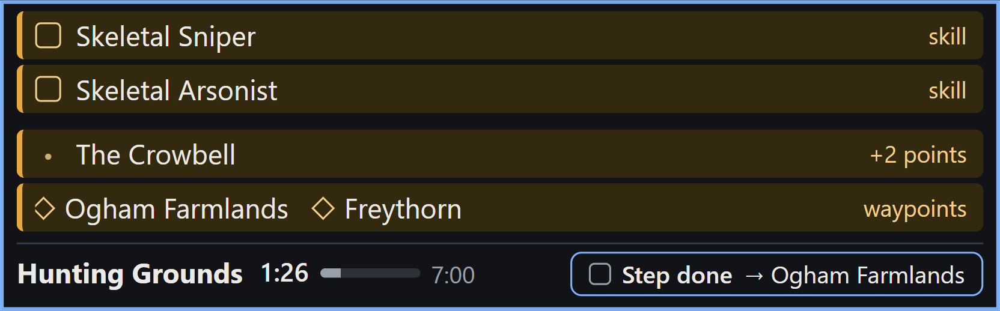
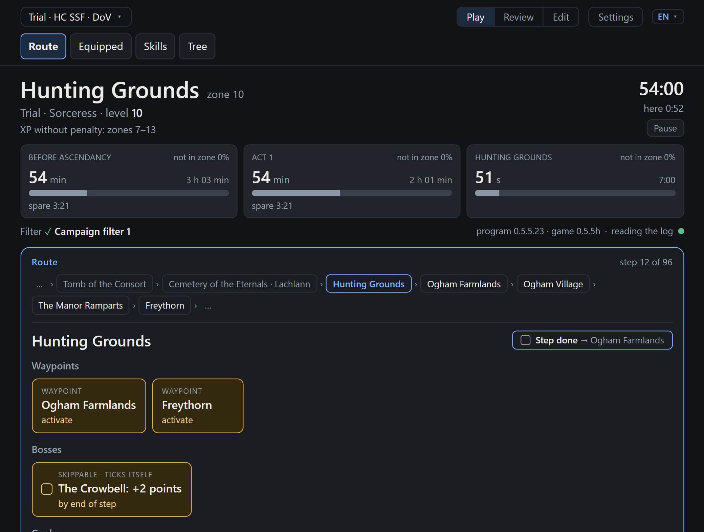
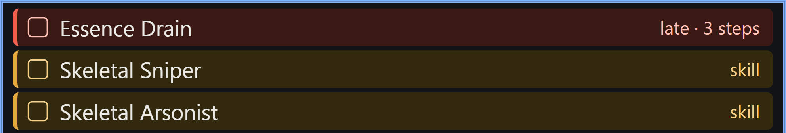
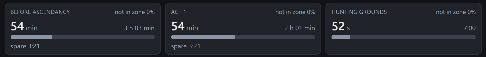
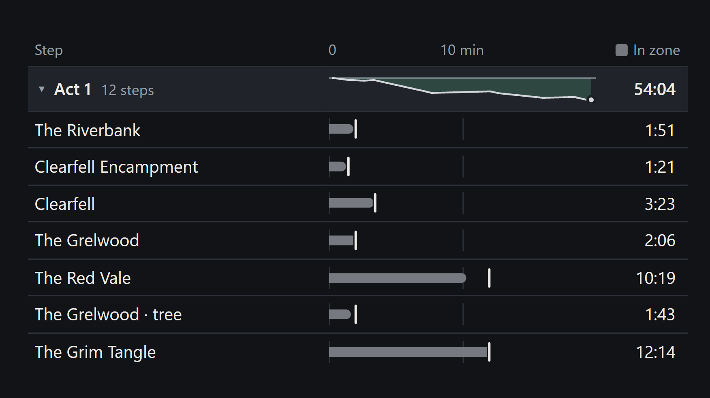
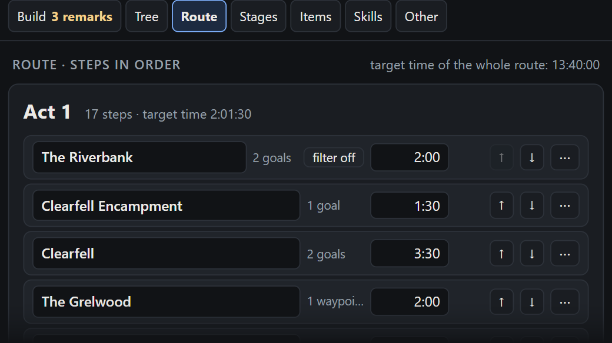

Play like a pro
The plan's author has already spent the hundreds of hours of trial and error for you. Runbook leads you through the plan: where to go, what to kill and what to pick up in every zone.
Download for WindowsFor build authors
The first build is not published yet

You just play
Enter a zone and Runbook already shows what to do there. Levels, rewards and passive nodes are checked off for you.

The red line stays
The plan's author knows by which step each thing must be taken and equipped. Fall behind and the line turns red and stays until it's done.

Equip or drop
Press F2 over an item to see whether it beats what you're wearing. By the stats the plan's author chose.
At the author's pace
Every step and act has its time from the plan. You see where you're ahead and where you're falling behind.

Analytics
Every minute counts
After the game, Review shows where the time went: step by step, in the zone, in town and off the route. Compare with your previous hero and see where you got faster.


Know a better way?
Build your own plan. The campaign is already mapped: every zone, boss and reward. Add your build and deadlines.
PoE2 Runbook
Questions
I already have a guide. Why would I need Runbook?
A guide has to be read, remembered and checked against the game. Runbook goes along with you: it knows which zone you're in and shows what to do now.
There's no plan for my class. What do I do?
Plans appear in the catalogue as authors share them. Meanwhile you can build your own: the campaign is already mapped, all that's left is to add your build.
A patch is out. Will Runbook work?
After a patch Runbook needs a new build. Until it's out, the program warns you that the game is newer. Once it's out, it updates with one button.
The list doesn't show over the game
That happens when the game runs in exclusive fullscreen: it covers Runbook's windows. Switch the game to windowed fullscreen in its settings and the list will appear. If it doesn't, check in Runbook's Settings that the windows over the game are turned on.
Windows won't let me run the installer
The installer isn't signed yet, so Windows doesn't know its publisher. Click “More info”, then “Run anyway”. How to verify the file before running
I'm missing a feature. Can I ask for it?
You can. This is the first version, the program will keep developing, and any request is welcome: write what's missing or what doesn't work. Write to the author · Issues on GitHub